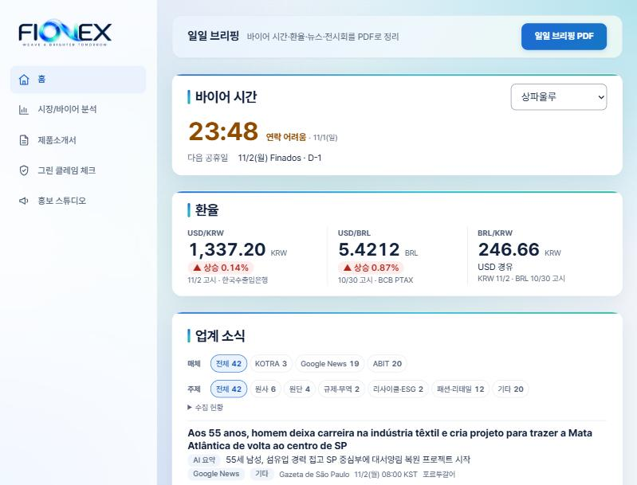

FIONEX
차세대 원사와 시장을 연결하는 플랫폼. 효성티앤씨 regen T2T 원사의 브라질 마케팅 대시보드
사이트 열기처음 열 때 시간이 조금 걸릴 수 있습니다.

- 프로젝트
- 한국무역협회 무역아카데미 무역 AX마스터 과정 2차 프로젝트
- 팀
- 5명 (TEAM HMHGMG)
- 담당
- 초기 기획안 작성, 홈 탭, 발표
- 설정
- 공개 자료로 구성한 가상 시나리오이며, 효성티앤씨 내부 자료는 쓰지 않았습니다.
- 기술
- Python, Flask, OpenAI API, ComexStat·KOTRA·섬유 뉴스 데이터
왜 브라질인가
효성티앤씨는 2030년까지 지속가능 제품의 매출 비중을 16%로 늘리는 목표를 세웠고, 헌 옷으로 만든 원사 regen T2T를 2025년 4분기부터 생산합니다. 이 원사를 알릴 첫 시장으로 브라질을 골랐습니다.
- 큰 생산 시장: 2024년 의류 약 84억 벌을 생산했습니다.
- 꾸준한 수입 수요: 2025년 섬유 수입액이 68억 달러입니다.
- 이미 있는 거점: 효성은 2011년부터 산타카타리나에서 스판덱스 공장을 운영하고 있습니다.
- 넘어야 할 벽: 폴리에스터 원사 관세가 18%여서, 가격 대신 친환경 가치로 파트너 브랜드를 공략하는 전략을 세웠습니다.
문제와 서비스 구성
남미 프로젝트팀의 마케팅·영업 담당자가 겪는 문제 4가지를 정의하고, 판단부터 확산까지의 업무 순서대로 5개 탭을 구성했습니다.
| 탭 | 해결할 문제 | 주요 기능 |
|---|---|---|
| 홈 (판단) | 흩어진 시장 정보 | 바이어 현지 시각과 연락 가능 여부, 환율, 업계 소식 AI 요약, 전시회 일정, 일일 브리핑 PDF |
| 시장/바이어 분석 (근거 확보) | 흩어진 시장 정보 | 브라질 수입 추이·단가, 공급국 비교, 잠재 바이어 839곳 목록과 AI 브리핑 |
| 제품소개서 (제작) | 근거 없는 현지어 소개서 | 한국어 제품 자료로 포르투갈어 소개서 PDF 생성 |
| 그린 클레임 체크 (검수) | 그린워싱 위험 | 친환경 문구별 위험 판단과 수정안 제시 |
| 홍보 스튜디오 (확산) | 보이지 않는 소재 | 바이어용·소비자용 포르투갈어 홍보 스토리보드와 PDF 저장 |
AI 결과를 믿을 수 있게 한 방법
- 수치 계산은 코드로 처리하고, AI는 해석과 문서 생성에만 씁니다.
- 출처 없는 수치·인증·공급 조건은 AI로 채우지 않고 '미확인'으로 표시합니다.
- 평균 단가를 견적으로, 일반 원사 수요를 T2T 수요로 단정하지 않습니다.
- 밖으로 나가는 소개서와 홍보물은 그린 클레임 검수를 거치도록 업무 흐름을 설계했습니다.
기획에서 구현까지
처음에는 남미 5개국을 고를 수 있는 'regen LATAM 에이전트'로 기획했습니다. 이후 브라질에 집중해 5개 탭을 구현하고, 서비스 이름을 FIONEX(포르투갈어 Fio '실' + Next)로 정했습니다.
향후 개발 계획
- 로그인: 계정·권한 관리와 작업 이력 저장
- 다국가 확장: 콜롬비아, 칠레, 아르헨티나 등 국가 선택
- 탭 연동: 분석 결과를 소개서와 검수로 자동 연결
- 규제 자동 갱신: 그린 클레임 기준 자료를 매월 업데이트
- 사내 시스템 연동: ERP와 그룹웨어 연결